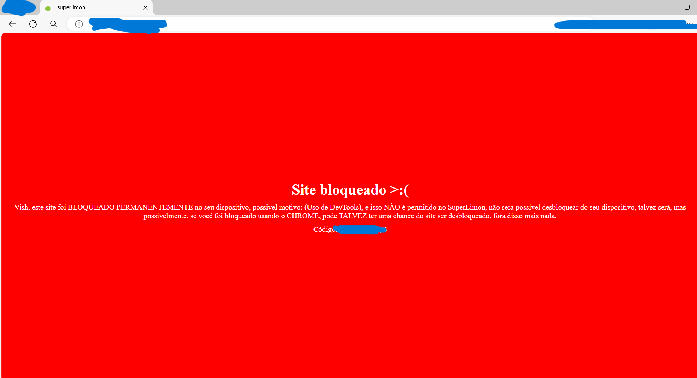

Super limon é um jogo onde você controla um limão que ganhou vidas, menos braços, o objetivo dele é evoluir para ganhar braços, mas não consegue, então ele pensa em outra maneira, a perna dele é verde, o corpo dele é verde, então o braço deveria ser verde tambem, entretanto, ele começou a proucurar coisas verdes para ver se é o braço dele, por isso que o objetivo do jogo é ir para o quadrado verde, ele foi até o espaço para tentar achar o braço dele, teve uma versão antiga que foi deletada por motivo obvios que erá ele eliminando o senor por que ele não fez o limon ganhar braços, o senor está vivo ainda, e proucura vingança, mas o limon não sabe que ele está vivo, o limon pensa que o senor é uma alma, mas na verdade não era uma alma, e sim ele está vivo querendo vingança
O limon se chamava JKWL na versão alpha, e era para ser um penguin, mas o modelo ficou feio demais para ser um penguin, dai a unica solução foi inventar outros modelos, um deles foi um limão com pernas e olhos
Os personagens são : Senor e limon (Versão 4.0)
O jogo era para ser um jogo de plataforma, mas por conta de um erro nos codigos, o jogo ficou meio que sem pular, dai surgiu a ideia de fazer um jogo de tentar chegar no bloco verde
Na versão 1.0 para baixo, era para o jogo ter apenas uma unica fase, que era o mapa classico, mas iria ficar muito sem graça, dai fizemos outras fases
Sim, existe o limon 3d, mas nunca colocamos, apenas em video
O jogo já teve una versão mobile, a versão 1.5 até 3.0 funcionava a versão mobile, mas por conta de bugs extremos que ocorria por contas das setinhas, resolvemos retirar a função mobile, infelizmente
Sim, você consegue ser BANIDO do superlimon, mas esse banimento é o pior tipo de banimento, pois você só consegue ser banido uma unica vez, já que se você for banido, você não conseguiria mais ser desbanido nem criando outra conta para jogar, e fica como banimento permanente, e o motivo desse unico banimeno é usar DevTools, para quem não sabe, DevTools é o famoso "Inspecionar" que isso prejudica muito o jogo, principalmente o fato que você pode copiar o jogo todo, e simplismente modificar codigos, por esse motivo, baniremos todos que usarem o DevTools
Sim, este site é um easter-egg, mas é dificil entrar nele pois precisa clicar 123 vezes no senor :o.